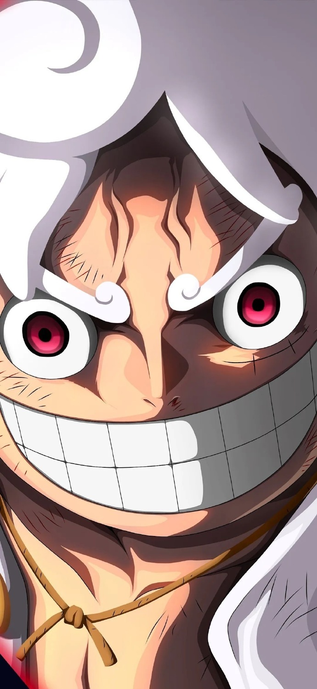
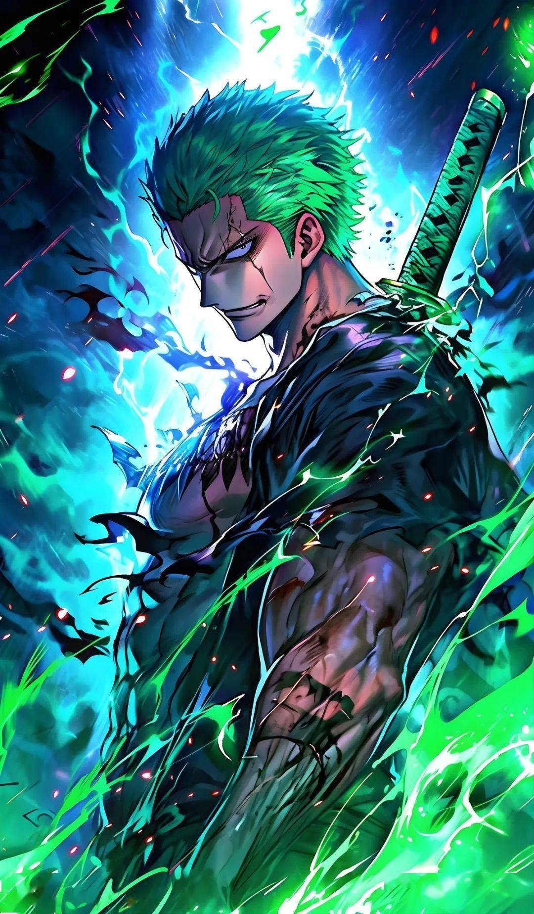
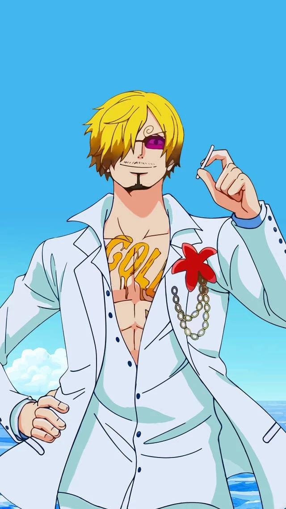
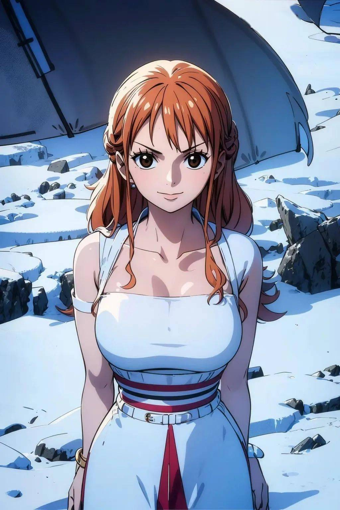
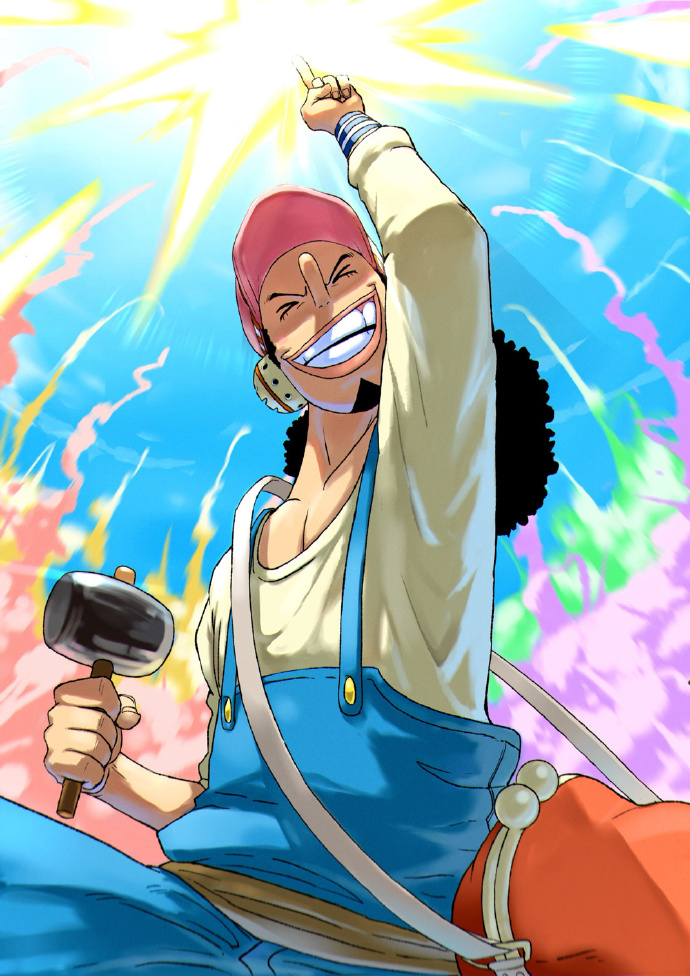
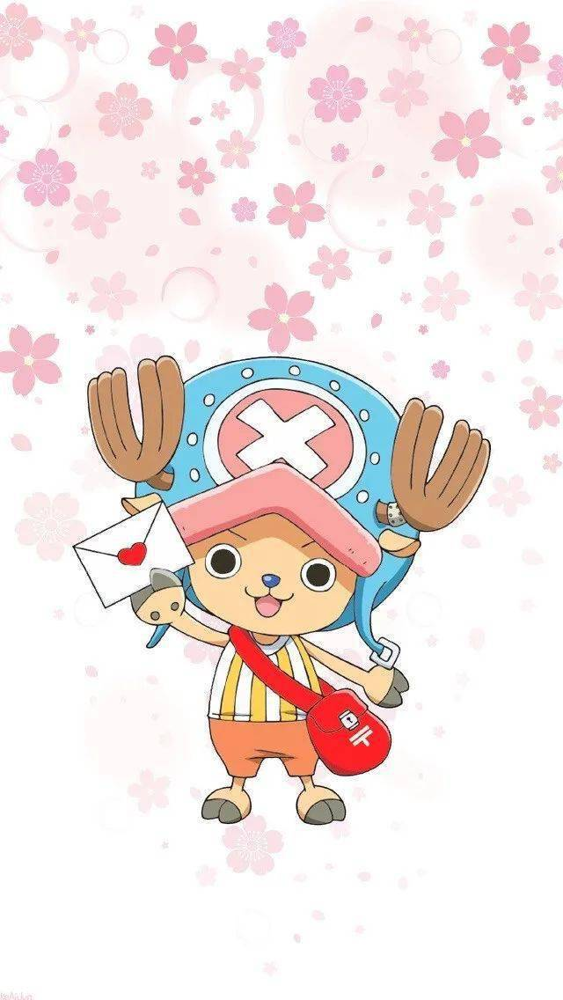
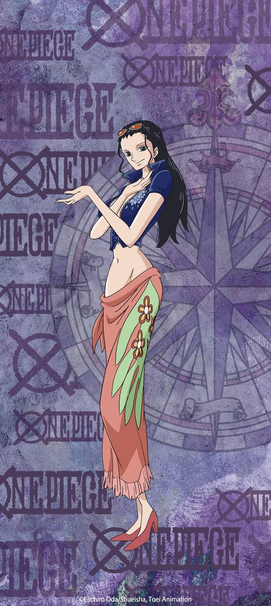
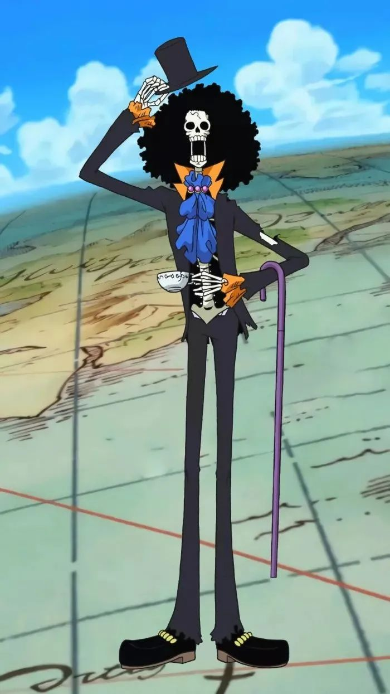

|  |  |  |  |  |  |  |  | |||||
欢迎来到邹瑞男的主页，让我们一起领略草帽海贼团的风采吧！ • 蒙奇·D·路飞（Monkey D.Luffy）：草帽海贼团的船长，梦想成为海贼王。他拥有橡胶果实的能力，身体可以像橡胶一样伸缩自如。 • 罗罗诺亚·索隆（Roronoa Zoro）：草帽海贼团的剑士，目标是成为世界第一的剑豪。他以三刀流剑术著称，性格严肃，对船长路飞非常忠诚 • 山治（Sanji）：草帽海贼团的厨师，同时也是船上的战斗员。他擅长踢技，对女性非常绅士，但对食物和厨艺有着极高的追求。
• 娜美（Nami）：草帽海贼团的航海士，擅长制图和气象学。她聪明机智，对金钱有着特别的执着。 • 乌索普（Usopp）：草帽海贼团的狙击手，擅长射击和发明。他虽然经常吹牛，但在关键时刻总能展现出勇气和智慧。 • 托尼托尼·乔巴（Tony Tony Chopper）：草帽海贼团的船医，是一只吃了人人果实的驯鹿。他能够理解人类语言，性格天真，对医学有着浓厚的兴趣。 + • 妮可·罗宾（Nico Robin）：草帽海贼团的考古学家，能够解读历史正文。她拥有花花果实的能力，可以让自己身体的任何部分在任何地方开花。 • 布鲁克（Brook）：草帽海贼团的音乐家，也是一名剑士。他是一具活骷髅，拥有黄泉果实的能力，能够灵魂出窍。 草帽海贼团的成员们各具特色，他们因为不同的梦想和目标而聚集在一起，共同在广阔的大海上冒险，寻找传说中的One Piece，以实现各自的梦想。 最后，让我们欣赏海贼王的超然混剪吧，保准你会爱上他的。
|
||||||||||||